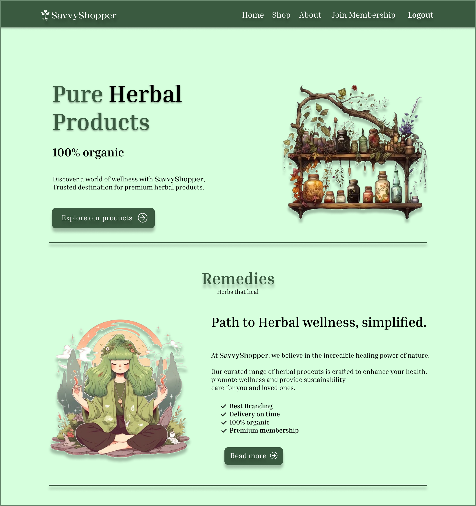
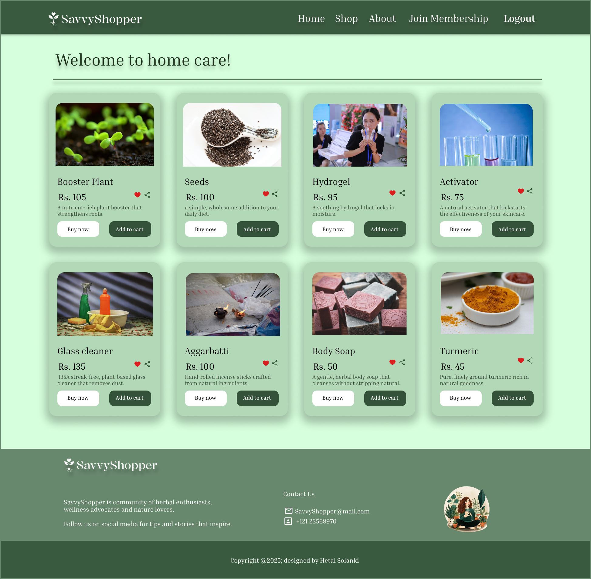
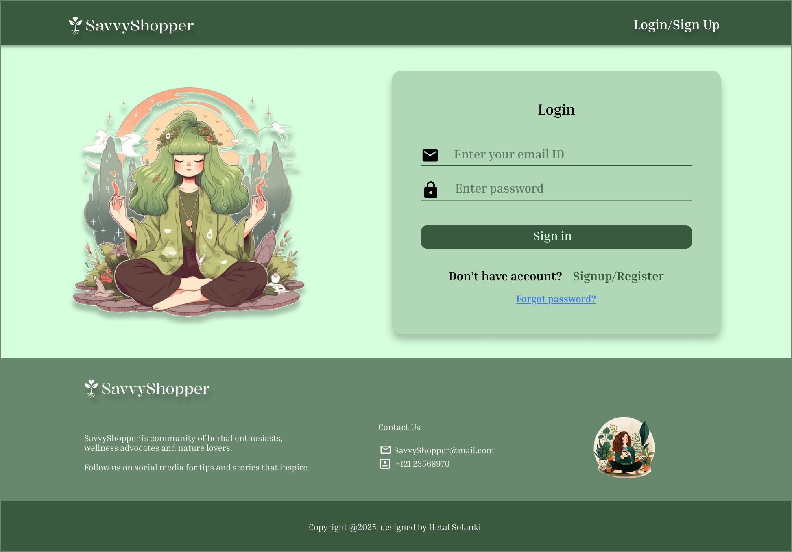
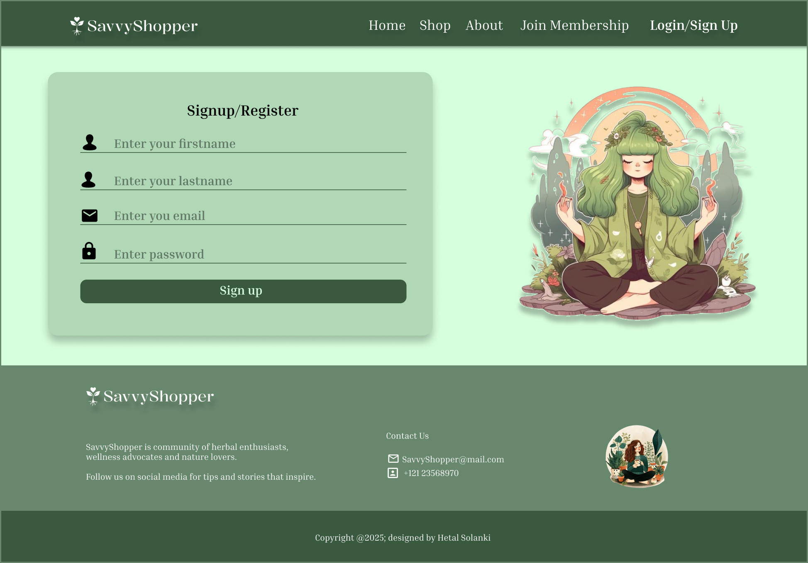

Solo Project · UI/UX Design · Systems Analysis
SavvyShopper
Herbal wellness, made easier to explore and shop.
- Project Type
- Solo Project
- My Role
- UI/UX Design · Systems Analysis
- Domain
- E-commerce / Herbal & Ayurvedic Products
- Methodology
- Waterfall SDLC
Contents
Project Overview
More than a storefront.
SavvyShopper is a herbal and Ayurvedic e-commerce project focused on making natural wellness products easier to discover and purchase.
The product range spans health and nutrition, skincare, personal care, home care, baby care, agriculture, veterinary products, and food.
My work explored two connected challenges: creating an approachable shopping experience and defining the systems needed to support a more capable e-commerce platform.
Project: SavvyShopper
Domain: E-commerce / Smart Shopping
My Role: UI/UX Design + Systems Analysis
Methodology: Waterfall SDLC
Beyond the interface
Alongside the UI, I explored product data, user requirements, database relationships, and the technical structure needed to support the platform.
The proposed expansion introduced ideas such as price tracking, personalized recommendations, and retailer integrations. These were explored as future system capabilities, not presented as completed features.
Background & Problem Definition
The challenge wasn't just selling products.
SavvyShopper's existing digital presence primarily introduced the brand and its products. The opportunity was to move toward a more structured shopping experience while addressing broader limitations in communication, reach, and performance measurement.
Where the existing approach fell short
01 — Unclear communication
Inconsistent messaging across channels made it harder to establish a cohesive brand experience.
02 — Limited reach
A narrow set of marketing channels restricted opportunities to connect with potential customers.
03 — Inefficient resource allocation
Without sufficient performance insights, allocating marketing budgets effectively was difficult.
04 — Limited analytics
The existing approach lacked robust tools for understanding user behavior and campaign performance.
05 — Outdated strategies
Traditional marketing practices created opportunities to rethink how the brand could engage digital shoppers.
The design opportunity
How might SavvyShopper create a clearer, more intuitive shopping experience while establishing the foundation for a scalable digital commerce platform?
The Design
A little nature. A lot of intention.
SavvyShopper began as an exploration of how thoughtful design could make herbal and Ayurvedic shopping feel simpler, more approachable, and trustworthy.
From brand identity to product discovery, I focused on creating a consistent experience that helps users find what they need without unnecessary friction.
Brand Identity
Wellness, without the visual noise.
A sage-green palette, nature-inspired visuals, and a hand-illustrated mascot establish a calm, approachable identity. These elements carry across the interface to create a consistent brand experience.

Homepage
A first impression that makes sense.
The homepage introduces the brand, communicates its value, and guides users toward product categories and featured items. The goal was to make exploration feel intuitive from the first scroll.

Category Page — Home Care
Less searching. More finding.
Product cards bring essential details together: name, price, description, and quick actions. Users can browse, compare, and move toward a purchase without unnecessary steps.

Login
Just the essentials.
A distraction-free login experience with minimal fields, a clear primary action, and a touch of brand personality.

Signup / Register
Getting started shouldn't feel like work.
A familiar form structure keeps registration straightforward and maintains consistency with the login experience.
What I'd Do Differently Now
Good design gets better when you question it.
SavvyShopper was my first complete UI/UX project, and revisiting it helped me recognize details I initially overlooked.
Content matters. Early product listings reused generic descriptions. I later replaced them with product-specific information to make browsing more useful and trustworthy.
Contrast matters too. Some category cards needed stronger text-to-background contrast. Today, I'd evaluate accessibility earlier in the design process rather than treating it as a final check.
The biggest lesson? A polished interface is only part of a good experience. The details need to work just as hard.
Proposed System
From product listings to smarter shopping.
The proposed system explored how SavvyShopper could evolve beyond a conventional storefront.
Rather than treating shopping as a single transaction, the concept considered discovery, comparison, purchasing, and ongoing engagement.
The proposed ecosystem
01 — Shopping Experience
Personalized homepage, advanced search, filters, product comparisons, cart, wishlist, reviews, and coupons.
02 — Smart Shopping Features
Price history, price-drop alerts, and aggregated product reviews.
03 — Backend Infrastructure
Centralized product data, user profiles, and data aggregation.
04 — E-commerce Integrations
Retailer APIs and payment gateway integrations.
05 — Future Extensions
Browser extension, social sharing, and premium subscriptions.
06 — Security & Privacy
Encrypted connections, secure payment processing, and user data controls.
07 — Revenue Opportunities
Affiliate commissions, subscriptions, and sponsored listings.
08 — Growth & Engagement
Referral incentives and social media acquisition.
These modules represent the proposed platform architecture and future opportunities, rather than a list of fully implemented features.
Advantages of the Proposed System
Better for shoppers. More capable for the business.
The proposed system was designed around a simple idea: help people make informed purchasing decisions while giving the business a stronger foundation for growth.
| Opportunity | Intended benefit |
|---|---|
| Personalized shopping | More relevant recommendations and alerts |
| Price comparison | Greater visibility into product prices and offers |
| Easier discovery | Faster browsing through search and filters |
| Better information | Access to price trends and aggregated reviews |
| Retailer integrations | A more connected shopping experience |
| Engagement features | More opportunities for repeat visits |
| Revenue models | Potential income beyond direct product sales |
These are anticipated benefits of the proposed system, not independently measured results.
Scope of the Project
Defining what comes first.
The project scope was organized into foundational capabilities and possible future extensions.
Core Scope
- Consistent brand identity and product presentation
- Product and service information
- Content and educational resources
- Customer support and communication channels
Future Extensions
- Integrated e-commerce checkout
- Customer relationship management
- Marketing automation
- Flexible campaign and page templates
Additional Business Content
- Campaign case studies
- Testimonials
- Service information
- Industry insights
The scope captures both the immediate platform needs and broader business-facing opportunities considered during analysis.
Theoretical Background
The thinking behind the system.
The proposed platform drew on concepts from consumer behavior, e-commerce, behavioral economics, and emerging technologies.
These frameworks helped inform potential features and design decisions.
Read the theoretical background
Consumer Behavior
Understanding what influences adoption, trust, and purchase decisions.
E-commerce & Digital Marketing
Exploring discoverability, conversion, retention, and personalization.
Machine Learning & AI
Considering recommendation systems, price prediction, and review sentiment analysis as future capabilities.
Behavioral Economics
Examining how price anchoring, social proof, and urgency cues may influence shopping behavior.
Price Optimization
Exploring demand, competition, and price sensitivity.
Social Influence
Considering how reviews and recommendations shape purchasing decisions.
The purpose wasn't to add technology for its own sake, but to understand where these ideas could support a more useful shopping experience.
System Analysis
Making the idea work beyond the screens.
Visual design was one part of SavvyShopper. The system analysis explored how requirements, data, and technical decisions could support the experience.
Read the system analysis
7.1 Development Methodology
Waterfall SDLC
The project followed a structured approach to documenting and developing the system.
01 — Requirement Analysis
Understanding business needs, reviewing existing processes, and defining system requirements.
02 — System Design
Planning workflows, database relationships, and system architecture.
03 — Development
Working with the selected development environment and database structure.
04 — Testing
Defining test cases, identifying issues, and checking system behavior.
05 — Maintenance
Planning for future fixes, updates, and improvements.
7.2 Feasibility Study
Could the proposed system work in practice?
The analysis considered four dimensions:
- Technical: Availability of the required development tools and infrastructure.
- Operational: Whether the system could be used without extensive technical training.
- Economic: Potential implementation costs and available resources.
- Behavioral: User adaptation and possible resistance to change.
The initial assessment indicated feasibility across these dimensions, subject to the assumptions documented in the project.
7.3 Fact-Finding Techniques
Understanding the system before defining the solution.
The analysis considered observation, interviews, record reviews, and document inspection to understand existing processes and information requirements.
These techniques informed the requirements documented for the proposed system.
User Requirements
What the platform needs to support.
The requirements were organized around the actions users would need to perform throughout the shopping journey.
View the user requirements
| Area | Proposed requirements |
|---|---|
| Accounts | Registration, profiles, and wishlists |
| Discovery | Search, categories, brands, and filters |
| Price Tracking | Price history and target-price alerts |
| Notifications | Updates on offers and price drops |
| Discounts | Coupons and promotional offers |
| Recommendations | Relevant product suggestions |
| Reviews | Product ratings and aggregated feedback |
| Retailer Information | Delivery, returns, and seller details |
| Responsive Experience | Support across device sizes |
| Payments | Secure checkout and payment options |
| Communication | Updates and referral features |
| Analytics | User and platform performance insights |
These requirements informed the proposed platform scope and architecture.
System Design
The structure behind the shopping experience.
To understand how the platform could function beyond the interface, I documented its core data entities, relationships, and system events.
Explore the system design documentation
9.1 Entity Relationship Diagram
Connecting the pieces.
The proposed data model included five primary entities:
Customer — Account and contact information.
Product — Product details, pricing, stock, and imagery.
Order — Transaction and delivery information.
Order Item — Products and quantities within an order.
Membership Tier — Loyalty levels and applicable discounts.
Together, these entities establish the relationships needed for core shopping and order-management workflows.
9.2 Data Dictionary
Giving every piece of information a place.
The data dictionary defines the attributes and data types associated with each entity, including identifiers, product details, order information, and membership rules.
The detailed tables document how information would be stored and connected within the proposed database.
| Column | Data Type | Description |
|---|---|---|
customer_id | INT | Primary key |
first_name | VARCHAR | Customer's first name |
last_name | VARCHAR | Customer's last name |
email | VARCHAR | Contact email address |
phone | VARCHAR | Phone number |
address | TEXT | Shipping address |
| Column | Data Type | Description |
|---|---|---|
product_id | INT | Primary key |
name | VARCHAR | Product name |
description | TEXT | Full product description |
price | DECIMAL | Unit price |
image | VARCHAR | Image URL or file path |
quantity_in_stock | INT | Available inventory |
| Column | Data Type | Description |
|---|---|---|
order_id | INT | Primary key |
customer_id | INT | FK → Customer table |
order_date | TIMESTAMP | Date and time of order |
total_amount | DECIMAL | Total order value |
shipping_address | TEXT | Delivery address |
billing_address | TEXT | Billing address |
| Column | Data Type | Description |
|---|---|---|
order_item_id | INT | Primary key |
order_id | INT | FK → Order table |
product_id | INT | FK → Product table |
quantity | INT | Units ordered |
unit_price | DECIMAL | Price per unit at time of order |
| Column | Data Type | Description |
|---|---|---|
tier_id | INT | Primary key |
tier_name | VARCHAR | Tier name (e.g., Silver, Gold) |
discount_percentage | DECIMAL | Applicable discount for tier |
9.3 Event Table
What happens when users take action?
The event table documents system responses to actions such as placing orders, applying discounts, and updating membership benefits.
It helps connect user interactions with the underlying system behavior.
| Event | Trigger | Activity | Response |
|---|---|---|---|
| Event ID | Unique identifier per event | Event classification | Event number assigned |
| Event Type | Order placed, discount applied | Filtering and analysis | Changes and placements |
| Customer ID | — | Links event to customer | Customer table update |
| Order ID | Links to order record | Order placement | Order table update |
| Member Discount | Member login | Percentage/discounts applied | Product view |
| Discount Unavailable | Member login | Product view | Cart page redirect |
| Discount Updated | Promotion update | Different level check | Membership level change |
| Discount Claimed | Checkout | — | Cart page |
9.4 Technology Stack
The technical foundation
| Layer | Technology / Approach |
|---|---|
| Development Environment | Visual Studio |
| Database | MySQL |
| Architecture | Client–Server |
| Methodology | Waterfall SDLC |
Key Outcomes & Insights
What this project helped me understand.
01 — Product thinking goes beyond screens.
Designing the shopping interface was only one part of the challenge. Mapping user requirements and system relationships helped me understand how different product decisions connect.
02 — A good experience needs a solid structure.
Features such as product discovery, checkout, and membership benefits depend on how information is organized and managed behind the scenes.
03 — Small details influence trust.
Product descriptions, visual consistency, and readable text all contribute to how confidently someone can use an e-commerce experience.
04 — Future features need clear priorities.
The proposed smart-shopping capabilities opened up possibilities for personalization and price intelligence, but also reinforced the importance of defining what should be built first.
05 — Designing for growth starts early.
Thinking about modular features, data relationships, and integrations helped me approach the project as a connected product rather than a collection of individual pages.
Conclusion
More than a first project.
SavvyShopper started with a simple goal: design an approachable shopping experience for herbal and Ayurvedic products.
It became an opportunity to explore what happens beyond the interface — from product information and user flows to database relationships and system requirements.
Looking back, there are decisions I'd make differently. I'd prioritize accessibility earlier, validate assumptions more thoroughly, and keep the initial product scope focused before introducing advanced features.
But that's what makes this project meaningful to me.
It taught me to design beyond what people see and think about how the experience actually works.